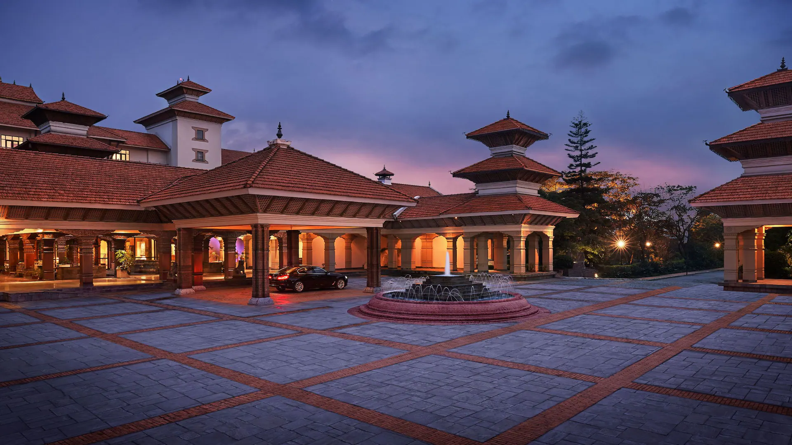

Meera Star Kathmandu is a 5 star luxury hotel and resort in Kathmandu and is set on 37 acres of landscaped grounds, created in the traditional Newari style of Nepalese architecture. This beautiful hotel and resort is located on the road to the Boudhanath Stupa: the most holy of all Tibetan Buddhist shrines outside of Tibet, and a UNESCO World Heritage Site which is 5 minutes walk from the hotel. The hotel is just 4 km (2.4 miles) from the Tribhuvan International Airport and 6 km (3.7 miles) from the city center of Kathmandu.
